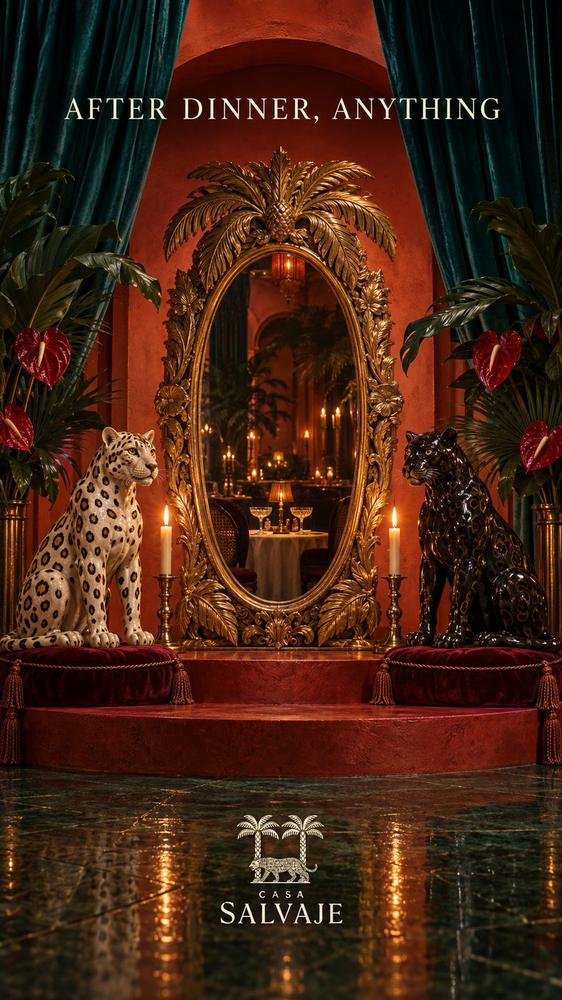

Sleeping inside the legend: luxury hotels in Cartagena's walled city
Six houses of counts, bishops and merchants turned hotels, from Townhouse's jazz rooftop to the palm-shaded courtyard of Casa Pestagua.
Leer en español →
There's an hour in the walled city, just after dawn, when the heat hasn't arrived yet and the streets belong to whoever is walking them. The Cathedral bells ring out over the tiled roofs, a carriage rolls slowly across the damp stone and, behind the great wooden doors, someone is watering the plants in a courtyard. Sleeping inside the walls changes the trip: you walk out at night, stroll home after dinner and wake to those bells. These are six hotels we recommend, from the smallest to the most complete.
Sleeping inside history
Pedro de Heredia founded Cartagena in 1533, and within a few decades the city was rich enough to tempt every pirate in the Caribbean. After Francis Drake sacked it in 1586, the Spanish Crown spent the better part of two centuries wrapping it in walls and bastions. It withstood so many sieges that it became known as "La Heroica" after the one in 1815, and in 1984 UNESCO named it a World Heritage Site.
Behind those walls lived counts, bishops, merchants and Creole families, in two-storey houses with wooden balconies, tall entrance halls and courtyards built to catch the breeze. Many of today's finest hotels are those very houses: you sleep beneath centuries-old beams and take breakfast where viceroys were once received.
The Cartagena poet Luis Carlos López wrote that he loved his native city the way one loves a pair of old shoes, and Cartagena took him at his word: it raised a monument to a pair of worn-out shoes, which now stands beside the Castillo de San Felipe. That tenderness for the old, more than any luxury, is what you feel stepping through the doors of these hotels.
Here you sleep beneath centuries-old beams and take breakfast where viceroys were once received.
I · Morning
In the shadow of the Cathedral
The day begins where the city began: around the Cathedral and Plaza de Bolívar, among wooden balconies and houses that once belonged to the Church and the colonial nobility.
Casa del Arzobispado
Next to the Cathedral, in the former archbishop's residence, a hotel with few rooms and a very quiet atmosphere. On the same street is Época, one of our favourite cafés to start the day.
A short walk away on Plaza de Bolívar, the Banco de la República's Museo del Oro Zenú holds the goldwork of the Zenú, the people who lived on the Caribbean plains long before Heredia arrived. It was gold like this, worked with astonishing finesse, that fed the conquistadors' fever for these lands.
Best for anyone after silence, with good coffee around the corner.
La Passion
An eight-room house with chequered stone floors, balconies and stairs climbing to a rooftop pool and bar with front-row views of the Cathedral.
Don't miss the Cathedral dome from the rooftop as the sun goes down.
Casa Pestagua
An aristocratic colonial mansion turned hotel, with courtyards and generous suites. It was Colombia's first Relais & Châteaux member and was named the best historic hotel on the continent.
The Count of Pestagua built the house in the 18th century on Calle Santo Domingo, so that no one could doubt the size of his fortune. Its great inner courtyard, shaded by palms and tropical plants, is still the best proof that he succeeded.
Best for sleeping, quite literally, inside colonial history.
II · Afternoon
Houses to disappear into
In the hottest hours the city draws inwards. This is the time for shaded courtyards, indoor pools and streets where almost no one passes.
Bastión Luxury Hotel
One of the largest luxury boutique hotels in the walled city, built on a colonial house that keeps its inner courtyards. It has a rooftop pool overlooking the Old City's domes, a restaurant, a spa and a gym.
Best for big-hotel service on a quiet street.
Casa La Cartujita
On Calle del Curato, a restored colonial mansion with a few rooms and a small indoor pool. Intimate and quiet, for anyone who wants to feel the house is theirs.
On the same street, beside the old Santa Clara convent, stands the house Gabriel García Márquez had built for himself in Cartagena, designed by his friend the architect Rogelio Salmona around an inner courtyard. It is still a private family home, closed to visitors, but walking past its walls is a ritual for every reader who comes to the city.
Best for a couple's escape, far from the noise.
III · Night
A rooftop and jazz
Townhouse
Steps from Plaza Fernández de Madrid, a handful of rooms and two bars: the rooftop, with plunge pools and views over the tiled roofs, and the lobby bar, which turns speakeasy with jazz at weekends.
The square is named after José Fernández Madrid, born in Cartagena in 1789: a physician, a poet and one of the men of independence, who went on to lead the United Provinces of New Granada in 1816. Few cities give a poet a square; Cartagena gave him one just around the corner from its finest houses.
Best for atmosphere without leaving the hotel.
Epilogue
Before you head back
When night falls, the walled city becomes another place. The balconies light up, horse-drawn carriages clatter over the stones and, sooner or later, from some corner you'll hear Rebelión, the 1986 song in which Cartagena-born Joe Arroyo told the story of an enslaved African couple in 17th-century Cartagena. It's the surest sign the night is only beginning, and that the hotel can wait.
- Townhouse See on the map
- Casa del Arzobispado See on the map
- Bastión Luxury Hotel See on the map
- Casa Pestagua Website · See on the map
- La Passion See on the map
- Casa La Cartujita See on the map
All are a few blocks from Casa Salvaje, at Calle Santa Teresa #32-41. Kanibal opens at noon, SLVJ serves dinner from 7 pm and, Thursday to Saturday, the club runs until 3 am. See opening hours.
Looking for more? Read boutique hotels in the Old City, more boutique hotels and where to stay in Cartagena.